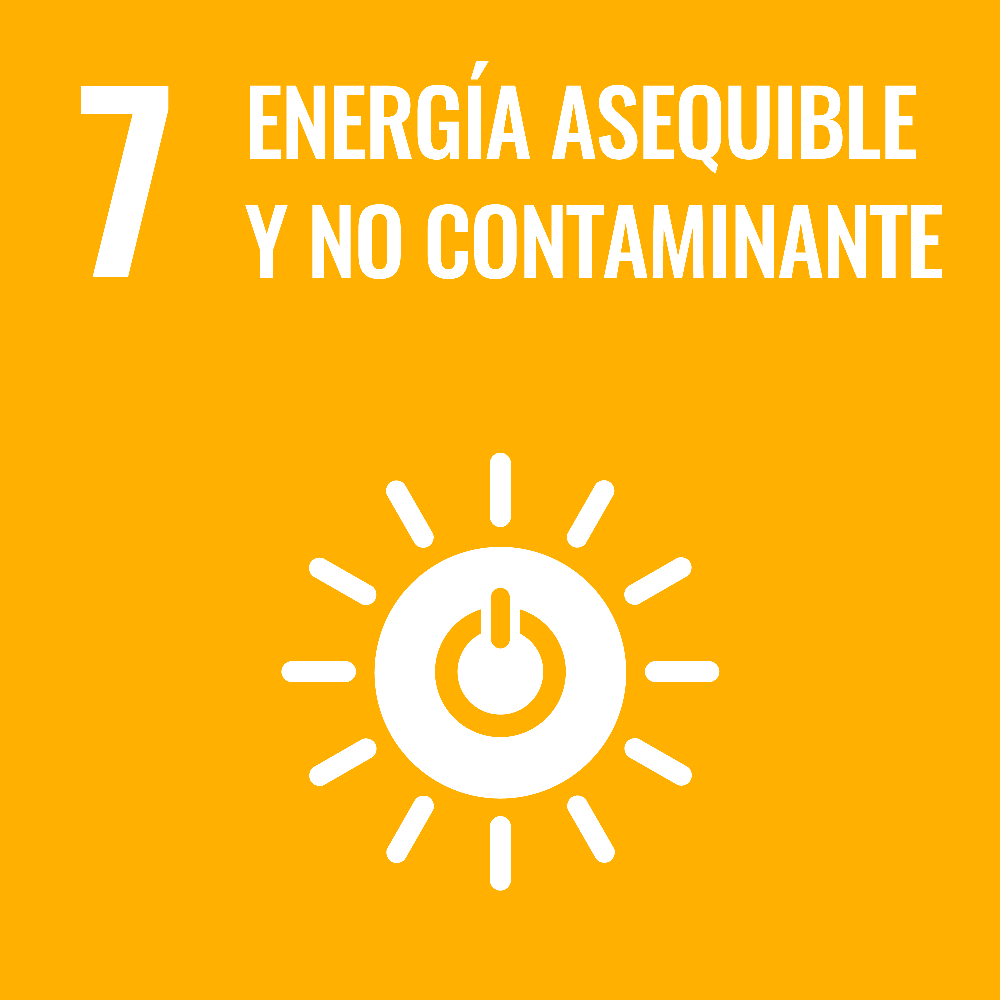
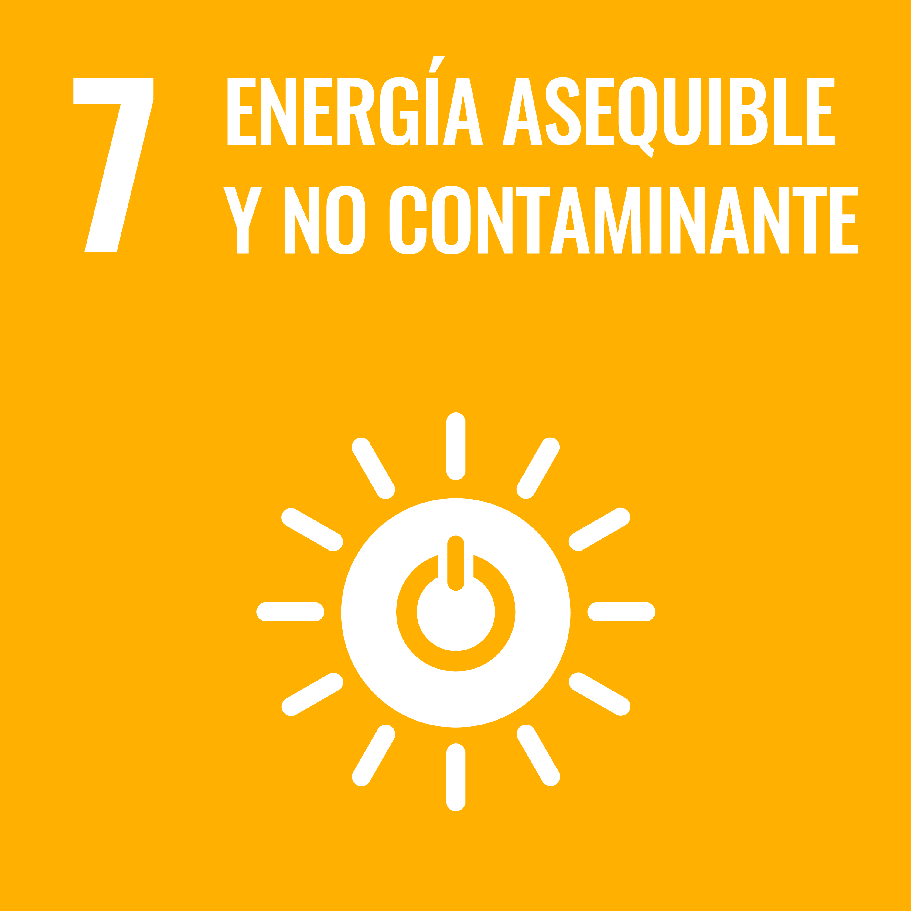
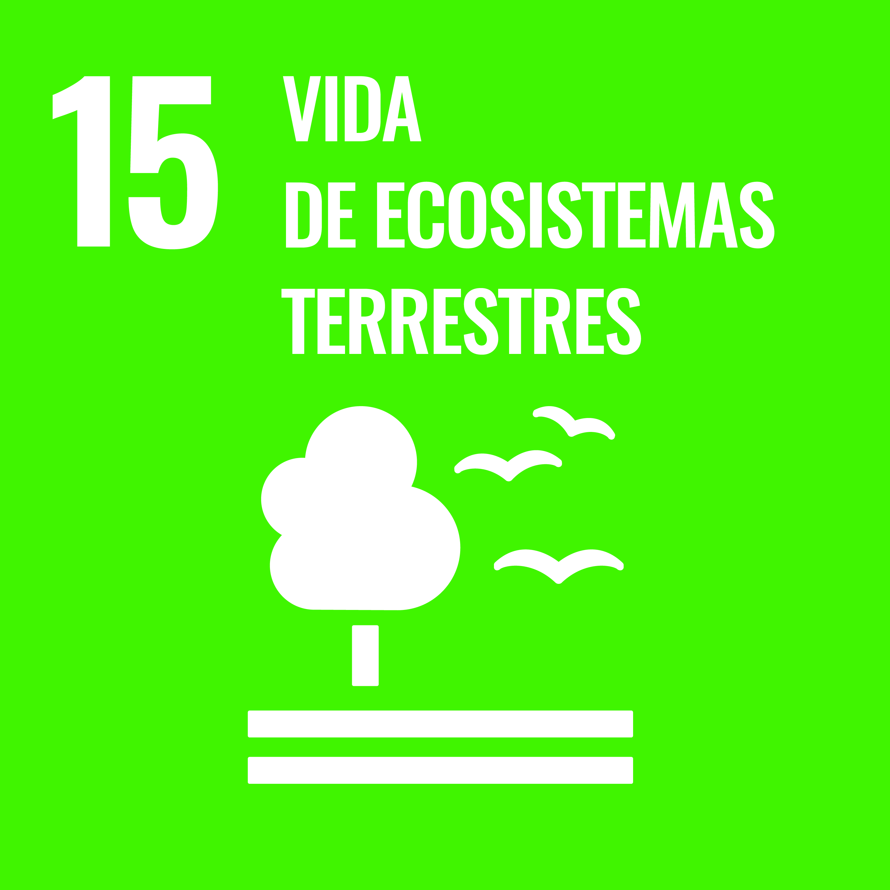
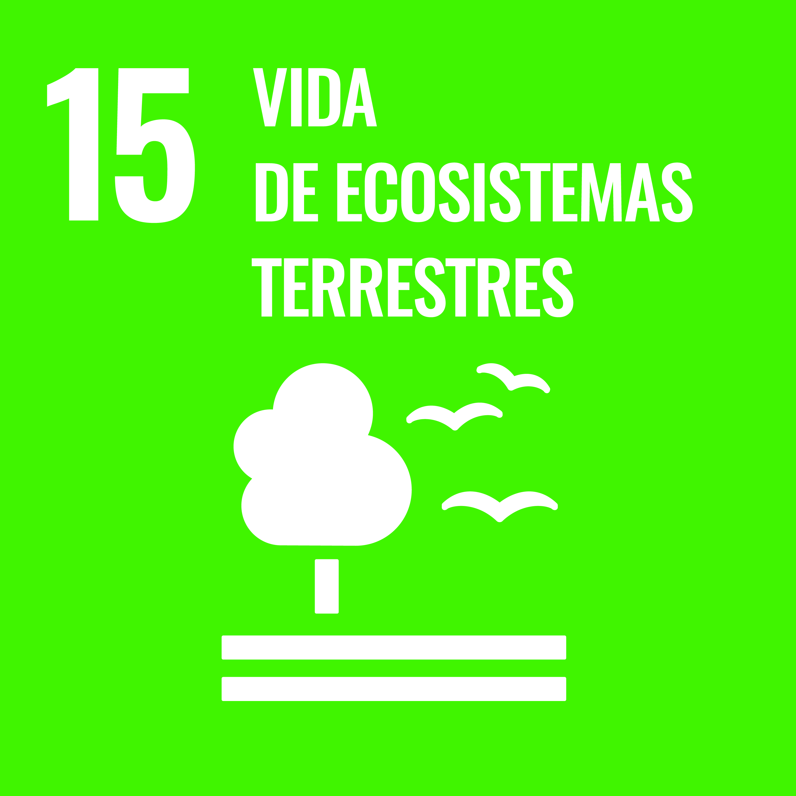

La naturaleza
"Conectando vida y esencia en cada rincón de la naturaleza."
Es un latido constante, un abrazo silencioso que nos rodea y nos sostiene. Es el murmullo del viento entre los árboles, el susurro del agua en los ríos, el eco lejano de las montañas. Nos habla en un idioma que no siempre escuchamos, pero que siempre está ahí, suave y persistente. Al contemplar un amanecer o sentir el calor del sol en la piel, podemos recordar que somos parte de algo inmenso, algo antiguo y profundo que nos trasciende. Cada hoja, cada roca y cada criatura cuentan una historia de vida y supervivencia, una historia que también es la nuestra. En la naturaleza encontramos refugio y enseñanza, porque ella nos muestra el arte de renovarse y la paz de ser, simplemente ser. Nos recuerda que, como las olas y las estaciones, nuestras vidas también son ciclos, y en cada uno hay belleza, incluso en los momentos de quietud.
La Animales
"Somos su esperanza, seamos su cambio."
La Amazonia es hogar de una increíble diversidad de animales, desde jaguares y anacondas hasta delfines rosados y cientos de especies de aves exóticas. Este ecosistema alberga aproximadamente el 10% de todas las especies conocidas del planeta, muchas de las cuales son únicas de esta región. Los animales de la Amazonia no solo mantienen el equilibrio ecológico, sino que también cumplen roles esenciales para la salud de los bosques, como la dispersión de semillas y el control de plagas. Sin embargo, la deforestación y la actividad humana amenazan su supervivencia, poniendo en peligro a innumerables especies y la biodiversidad de este invaluable pulmón del mundo.


 



 
